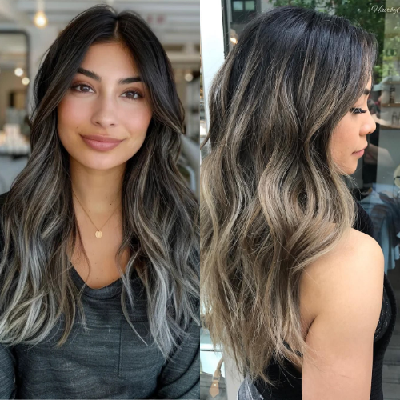

As trends in hair coloring continue to evolve, blending gray hair with highlights has become one of the most effective and stylish ways to embrace natural aging while maintaining a youthful look. If you have dark brown hair and want a seamless blend, choosing the right highlight technique is key. Here are the best highlights to blend gray hair on dark brown hair in 2025.
Balayage remains a top choice for blending gray hair into dark brown locks. This freehand painting technique creates a soft, natural transition that minimizes harsh lines. In 2025, hair stylists are opting for a mix of caramel, honey, and ash tones to provide a dimensional and low-maintenance solution.
Babylights are ultra-fine highlights that mimic the natural sun-kissed strands seen in children’s hair. These delicate highlights help to blend gray seamlessly without drastic color shifts, making them perfect for those who want a subtle and sophisticated look.
For a trendy and modern touch, ash blonde or silver highlights can enhance your grays rather than covering them. The cool-toned hues blend naturally with gray hair, offering a stylish and effortless aesthetic that aligns with 2025’s trend toward natural beauty.
Mushroom brown is a versatile, neutral-toned highlight that works exceptionally well for blending gray hair with dark brown. This earthy shade combines cool beige and ashy tones to create a harmonious and muted effect that complements natural grays.
Strategic face-framing highlights, also known as the "money piece," add brightness around the face while subtly incorporating gray into your look. Choosing a warm honey or golden brown can soften your overall appearance while maintaining a chic and contemporary style.
If you’re not a fan of lighter highlights, lowlights can be an excellent alternative. Darker lowlights interwoven with your natural hair help create contrast and depth, making grays appear blended rather than stark against dark brown hair.
An ombre effect that gradually fades from dark brown to a lighter shade near the ends can create a beautiful gradient that incorporates gray hair naturally. This technique requires minimal upkeep and allows for a smooth transition between natural and dyed sections.
To keep your highlighted hair looking fresh and vibrant, consider the following tips:
Use a sulfate-free shampoo to prevent color fading.
Apply a purple or blue-toned shampoo to keep brassy tones at bay.
Get regular trims to maintain healthy hair and prevent split ends.
Schedule touch-ups every 8–12 weeks to ensure the highlights remain blended.
Blending gray hair with highlights is a great way to achieve a youthful yet natural look. Whether you prefer subtle babylights, bold silver streaks, or a soft balayage, the key is choosing a technique that complements your personal style while keeping your hair healthy and radiant. Stay on-trend in 2025 by embracing your grays with confidence and style!
